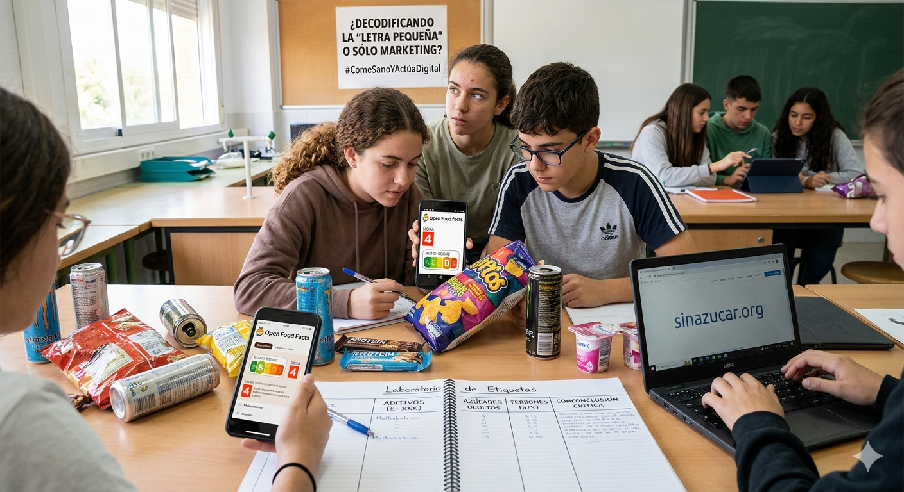

El Reto
¿Sabes realmente lo que estás comiendo o solo estás leyendo lo que el equipo de marketing quiere que veas? En este laboratorio vas a dejar de mirar la foto bonita del envase para convertirte en un experto en decodificar la "letra pequeña". Vamos a descubrir si tus snacks y bebidas favoritas son aliados de tu salud o "trampas" nutricionales.

Abel López utilizando IA Gemini. Análisis del etiquetado de alimentos (CC BY-SA)
FASE 1. ANÁLISIS DE ALIMENTOS EN CLASE.
Paso 1: El Escaneo Digital (Uso de la app YUKA).
Saca el producto que has traído de casa (esa bebida energética, ese batido de proteínas o tus snacks favoritos).
1. Entra en la web de Open Food Facts o usa su app YUKA o MyRealFood si la tienes instalada en tu dispositivo.
2. Introduce el nombre del producto o escanea el código de barras.
3. Observa el Nutri-Score y el Grado NOVA:
- Nutri-Score: ¿Qué letra tiene? (De la A a la E)
- Grado NOVA: ¿Es un alimento procesado o ultraprocesado? (Nivel 1 al 4).
Aplicación
Paso 2: La Caza del Azúcar Oculto.
El azúcar no siempre se llama "azúcar". Los fabricantes usan más de 50 nombres distintos para camuflarlo.
- Busca en la lista de ingredientes palabras como: Maltodextrina, jarabe de maíz, fructosa, dextrosa, concentrado de zumo, miel o sirope de ágave.
- Calcula los terrones: Mira la tabla nutricional en la columna de "Hidratos de carbono (de los cuales azúcares)".
- Regla de oro: Cada 4 gramos de azúcar equivalen a 1 terrón.
Ejemplo: Si tu bebida tiene 32g de azúcar, estás bebiendo 8 terrones de golpe. ¿Te comerías 8 terrones seguidos con una cuchara?
Paso 3: El Diccionario de Aditivos (¿Qué es ese "E-XXX"?)
Analiza los aditivos (conservantes, colorantes, edulcorantes).
- Anota los códigos que empiecen por "E-".
- Utiliza este buscador para saber qué son: Utiliza la aplicación de YUKA o Buscador de Aditivos Alimentarios.
- Clasifícalos según su seguridad: Inofensivos, Precaución o Peligrosos.